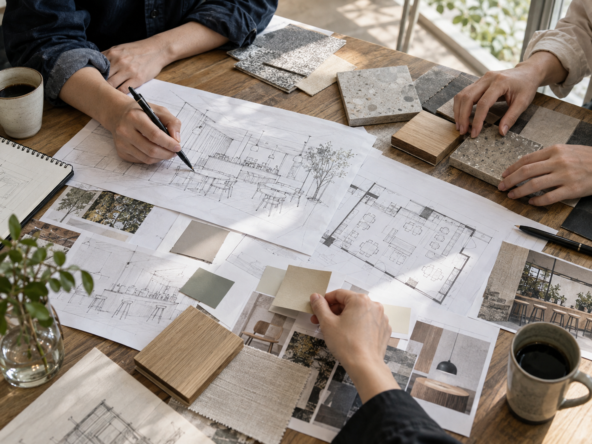
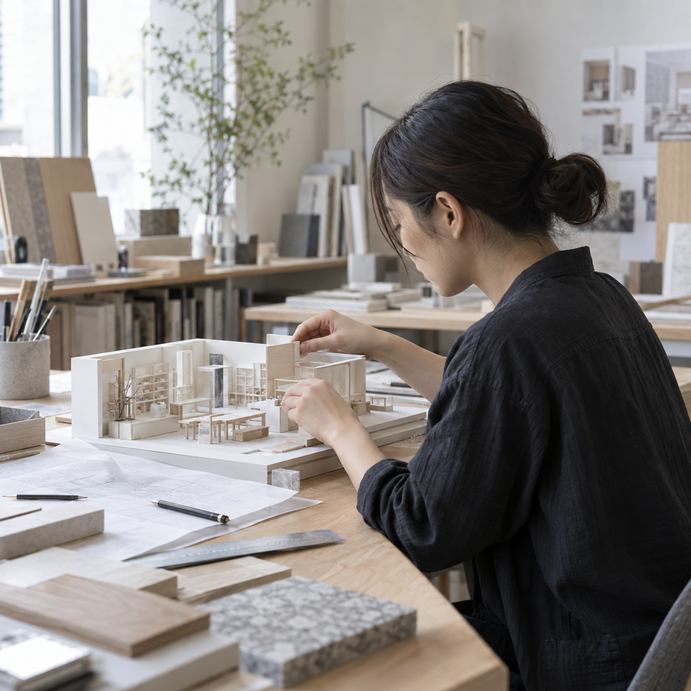
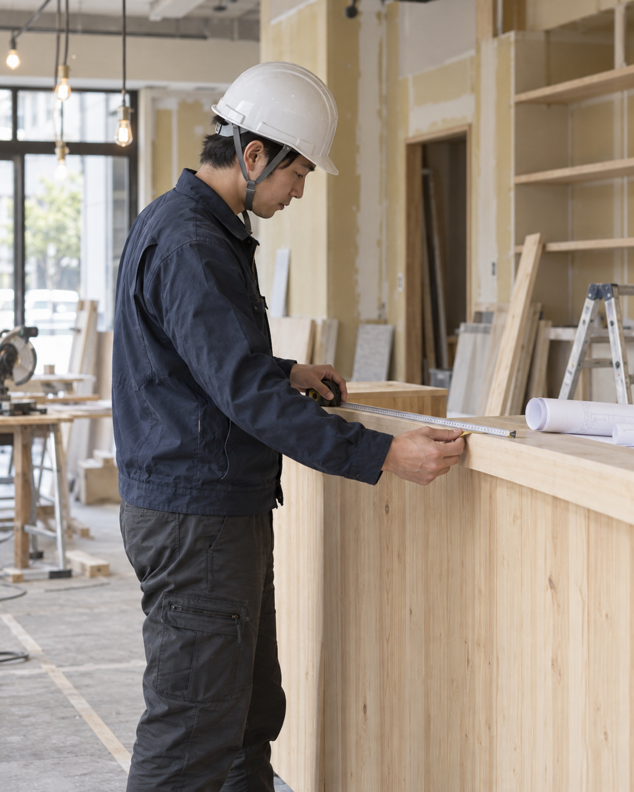
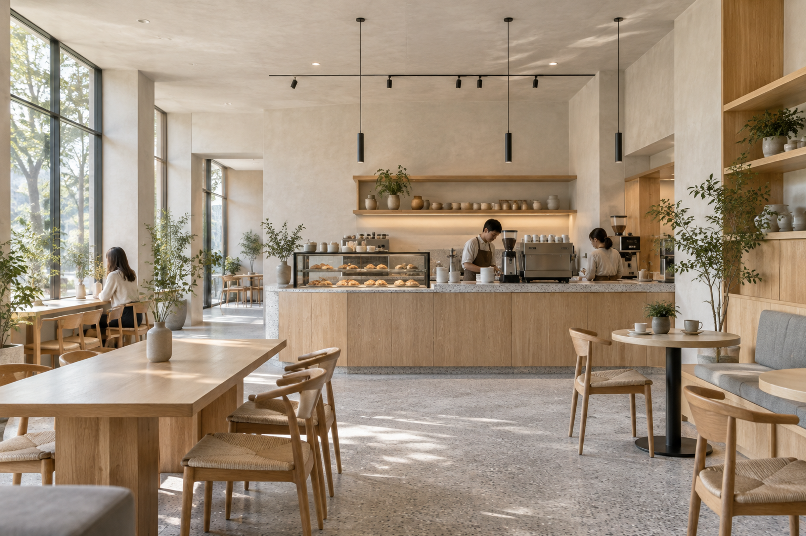
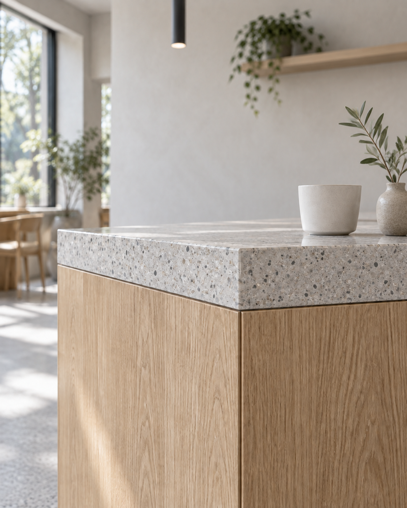

BEHIND THE SPACE
SPACE IS
NEVER MADE
ALONE.
ひとりでは、空間はつくれない。
完成した空間の裏側にいる、
考える人、描く人、つくる人を紹介します。
03HOW WE CREATE
FROM IDEA
TO OPEN.
4つの工程を、
職種の連携とともにたどる。
-

THINK
課題を読み解き、
VIEW PROCESS →
空間の目的を定める。 -

DESIGN
体験を描き、
VIEW PROCESS →
かたちと意味をつなぐ。 -

BUILD
図面を現場へ運び、
VIEW PROCESS →
品質を積み上げる。 -

OPEN
人を迎え、
VIEW PROCESS →
空間の時間を始める。
SCROLL TO FOLLOW THE PROCESS / ACTIVE STEP CONNECTS PEOPLE, IMAGE, AND ROLE
04PROFESSIONS
8 PROFESSIONS,
ONE SPACE.
異なる専門性から、
自分に合う仕事の入口を見つける。
05PROJECT × PEOPLE
ONE PROJECT.
MANY HANDS.
完成した空間の裏側にある、職種と人のつながりを見る。
MADO / CAFE / TOKYOCONCEPT TO OPEN



06PEOPLE
THE PEOPLE
BEHIND THE SPACE
役割も経歴も違う。
共通するのは、協働すること。


07CULTURE / NUMBERS
HOW WE WORK.
数字と制度から、
ATELで働く日常を知る。
- 80TEAM MEMBERS
- 東京・大阪の2拠点
- 31AVERAGE AGE
- 20代〜30代前半が中心
- 2OFFICES
- TOKYO / OSAKA
- 8PROFESSIONS
- 専門性を越えて協働
DATA / FICTIONAL COMPANY PROFILE